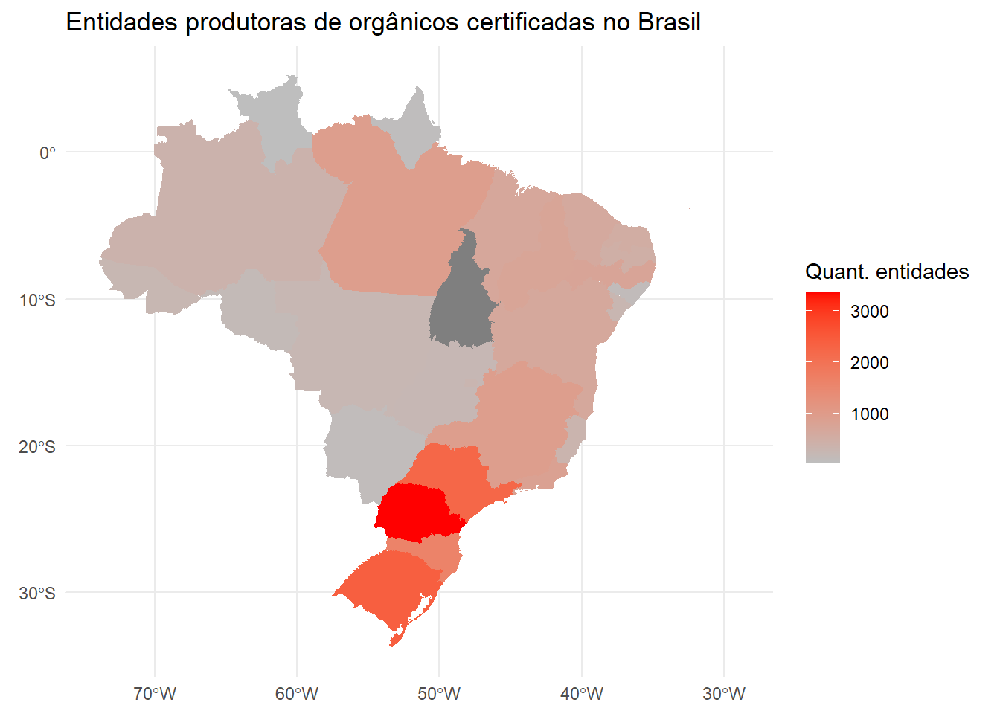

produtores <- read_excel("~/projetos_r/dados/cnpomapa30092019.xlsx")
produtores <- janitor::clean_names(produtores)Breve análise sobre produtores de orgânicos no Brasil
Introdução
Neste trabalho, verificaremos quais países possuem mais entidades certificadas para exportar protudos orgânicos para o Brasil. Para, em seguida, analisar de produtores orgânicos por unidade federativa.
Os dados utilizados estão disponíveis na base de Dados Abertos oficiais do Ministério da Agricultura, Pecuária e Abastecimento (MAPA). A última atualização dos dados foi realizada em 23 de Maio de 2022, mas os mesmos são referentes ao ano de 2019.
Importando os dados
A base possui 19978 entidades produtoras de orgânicos, tanto nacionais quanto internacionais. Além disso, tem-se as seguintes colunas: tipo_de_entidade, entidade, pais, uf, cidade, situacao_cnpo, cnpf_cnpj_nif, nome_do_produtor, escopo, atividades, contato.
Tratando os dados
Com os dados importados, realizamos transformações para iniciar a análise. Na coluna sobre o país de origem, os nomes não estavam padronizados e, também, o Brasil estava representado como “Brasil” e como “BR”.
prod2 <- produtores %>%
mutate(pais = case_when(pais == "BR"~ "BRASIL",
pais == "Brasil" ~ "BRASIL",
pais == "Argentina" ~ "ARGENTINA",
pais == "Espanha"~ "ESPANHA",
pais == "Portugal" ~ "PORTUGAL",
pais == "ITALY" ~ "ITÁLIA",
pais == "MEXICO" ~ "MÉXICO",
pais == "FRANCE" ~ "MÉXICO",
pais == "PARAGUAY" ~ "PARAGUAI",
TRUE ~ pais))Olhemos agora para os estados brasileiros. Assim como nos países, encontramos algumas insconscistências na apresentação das observações. Há estados cadastrados pelo nome e pela sigla, siglas com alguma das letras em caixa baixa e a Cidade del Est está cadastrada como estado, sendo uma cidade na divisa do Brasil com o Paraguai. Neste caso, por ela estar cadastrada como brasileira, reclassificaremos como uma entidade pertencente ao estado do Paraná (PR).
prod2 %>%
filter (pais == "BRASIL") %>%
mutate(uf = case_when(uf == "Bahia"~ "BA",
uf == "Ciudad del Este" ~ "PR",
uf == "ITAPUA" ~ "BA",
uf == "Pr"~ "PR",
uf == "sc" ~ "SC",
TRUE ~ uf)) %>%
group_by(uf) %>%
count () %>%
arrange(desc(n))-> prod_ufExportadores
O segundo passo foi agrupar todos os países, à exceção dos Brasil, e somar a quantidade de entidades cadastradas.
prod2 %>%
filter (pais != "BRASIL") %>%
group_by(pais) %>%
count () %>%
arrange(desc(n)) %>%
rename (produtores = n ) -> exportadoresAo total temos 19978 estrangeiros e 27 brasileiros. Para os estrangeiros, obtemos a seguinte tabela:
exportadores%>%
reactable::reactable()Nota-se que os três países que mais possuem produtores orgânicos autorizados a exportar para exportar para o Brasil são: Bolívia, Turquia e Itália.

Importante ressaltar que ter o maior número de entidades certificadas para exportação não necessariamente significa que o país exporta em maior quantidade para o Brasil.
Quantidade de produtores por estado
Os estados com mais produtores são Paraná, Rio Grande do Sul e São Paulo:
prod_uf%>%
rename (produtores = n) %>%
rename (estado = uf) %>%
reactable::reactable()No seguinte mapa, apresentamos os estados com o maior número de produtores de orgânicos cadastrados no site do MAPA. Lembrando que o maior número de produtores não necessariamente representa maior produção em quantidade
ggplot() +
geom_sf(data=dados_brasil, aes(fill=n),color = NA)+
scale_fill_gradient(low = "grey", high = "red",
name="Quant. entidades") +
labs(title="Entidades produtoras de orgânicos certificadas no Brasil", size=10) +
theme_minimal()